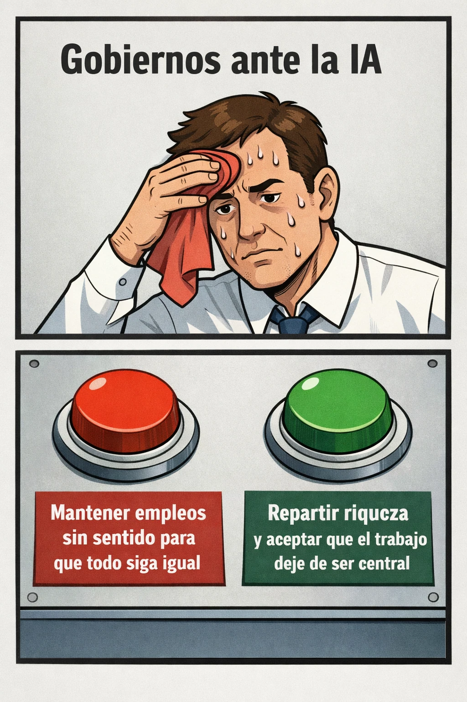

estrategIA #132 ·
Trabajo o reparto de la riqueza
El contexto
Los dos botones exageran una disyuntiva política sobre la automatización: conservar cualquier empleo o repensar el reparto de riqueza. La imagen condensa la posición editorial de aquel número, no una descripción neutral de todas las alternativas.
Publicado en: estrategIA #132 — Contra el pensamiento único: “la IA es mala porque destruye empleos”
Leer el texto de la imagen
Gobiernos ante la IA Mantener empleos sin sentido para que todo siga igual Repartir riqueza y aceptar que el trabajo deje de ser central